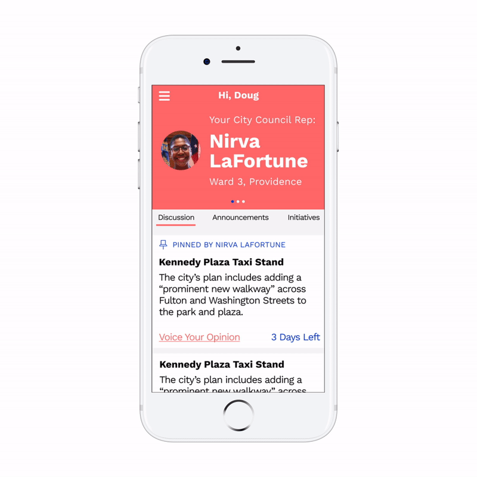
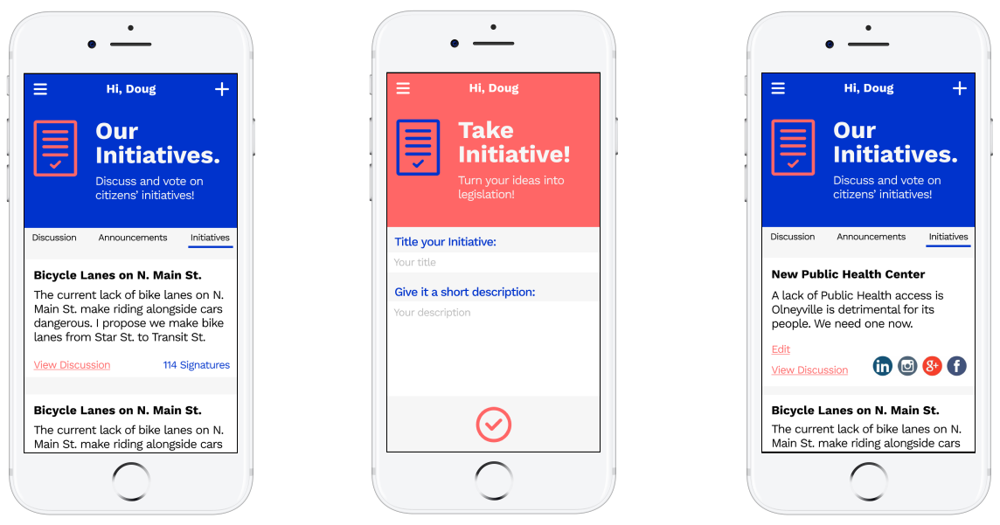

Users who register for Town Hall are given a brief introduction to their power as citizens and their capabilities using the app.
Once logged in, citizens and their elected city officials can post discussion boards to gauge the local community’s opinions.
If citizens choose to enter a discussion, they’ll be presented with any background information about the issue being debated.
After seeing both sides of the argument, citizens can choose to agree or disagree with an issue.
After voting, citizens can see how others feel about the issue.
Politicians can see how their constituents feel about issues, and why.
Users can also propose initiatives directly from the Town Hall site. Once created, other citizens can sign onto the initiative. Initiatives with enough signatures will be reviewed by the local government and could eventually end up on state or county ballots.
